Navegação, escalabilidade e consistência. Do zero.
Liderei, junto com outro designer, o redesenho completo da plataforma SaaS de gestão logística da Rabbot. A plataforma tinha limitações reais: navegação pouco intuitiva, baixa escalabilidade e problemas de desempenho que dificultavam o dia a dia dos usuários. Conduzi o projeto desde a exploração inicial até o acompanhamento pós-lançamento, passando por pesquisas, mapeamento de jornadas, prototipagem e colaboração próxima com o time de desenvolvimento.
Começamos reunindo insights por meio de entrevistas com usuários, análise de dados e benchmarking. Organizamos tudo no Miro, categorizando problemas críticos e oportunidades de melhoria. Em paralelo, criamos playbooks detalhados para estruturar jornadas, mapear personas e alinhar o time sobre o que precisava mudar. Esses materiais também orientaram decisões estratégicas de produto, como versionamento futuro e estratégias de Go-To-Market.
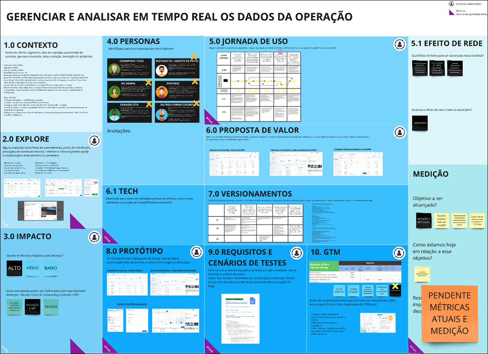
Miro — organização dos insights e playbooks
Mapeamos as principais jornadas com base na abordagem Jobs To Be Done, entendendo o que os usuários precisavam realizar em cada etapa. Fizemos análises As Is e To Be para diagnosticar as falhas da versão anterior e propor melhorias concretas. Conectamos essas jornadas às alavancas de negócio: onboarding, adoção e retenção. O design precisava fazer sentido tanto para o usuário quanto para o produto.
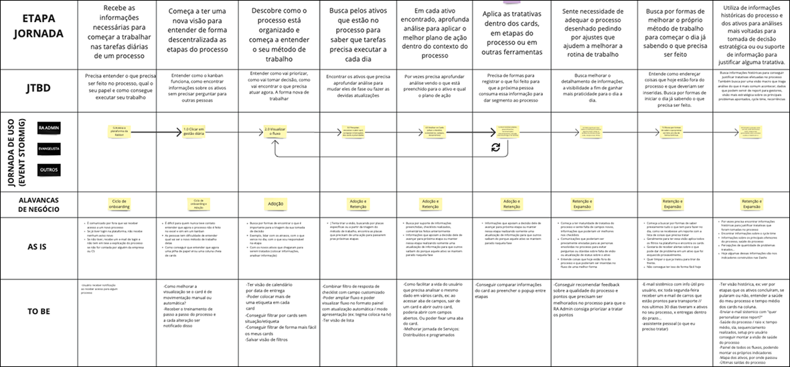
Mapeamento de jornada — Jobs To Be Done
Os primeiros wireframes serviram para validar conceitos, priorizar funcionalidades e ajustar a estrutura antes de qualquer definição visual. Essa etapa foi importante para alinhar o time e garantir que estávamos resolvendo os problemas certos antes de avançar.
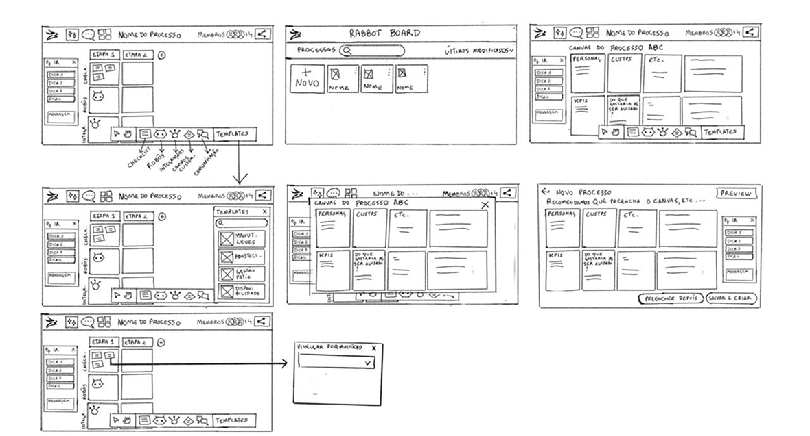
Wireframes — estrutura antes da interface
Os protótipos de alta fidelidade foram organizados no Figma com componentes reutilizáveis e documentação clara, pensando desde o início no handoff para o time de desenvolvimento. A organização do arquivo foi tão importante quanto o design em si.
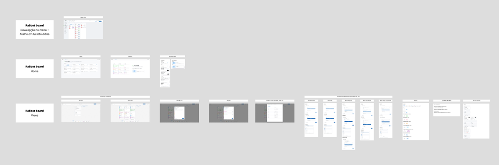
Organização no Figma — componentes e handoff
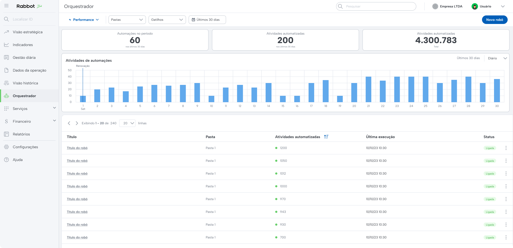
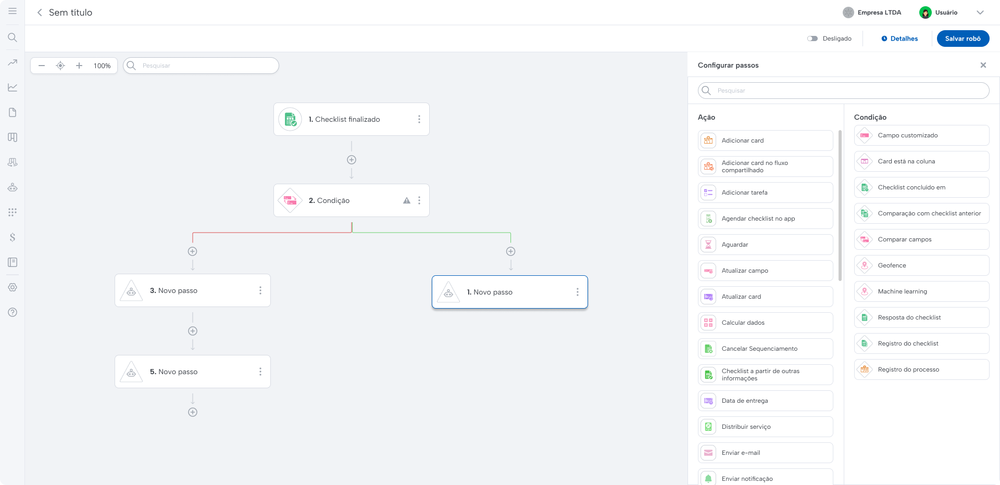
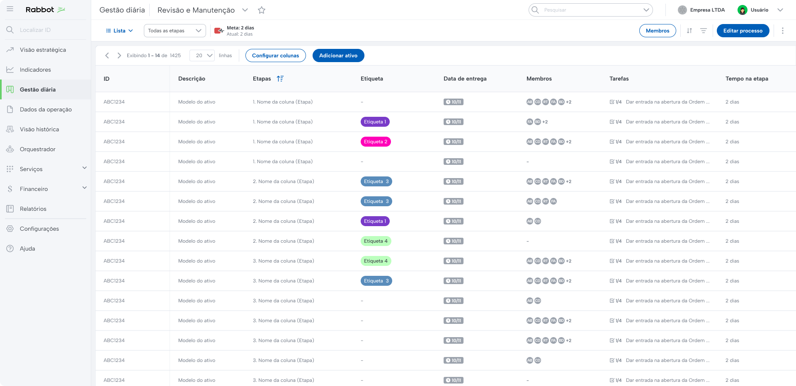
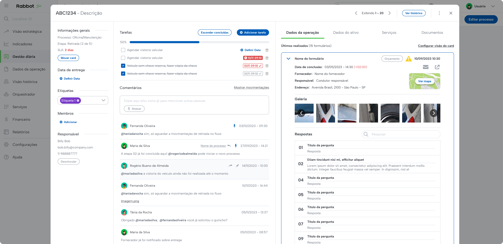
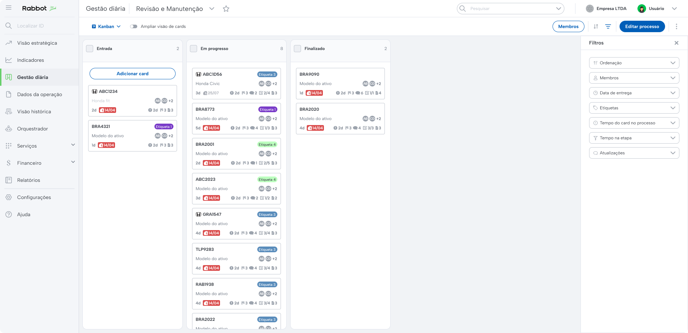
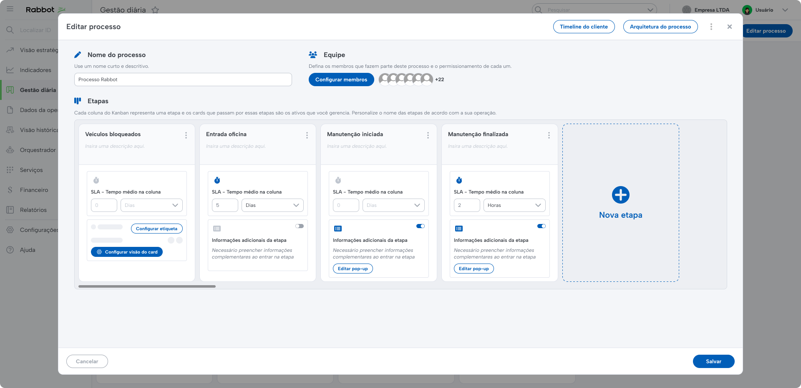
Para facilitar a adoção das novas funcionalidades, desenvolvemos tours interativos com o Gainsight PX, orientando os usuários sobre as novidades da plataforma de forma contextual, sem depender de treinamentos manuais.
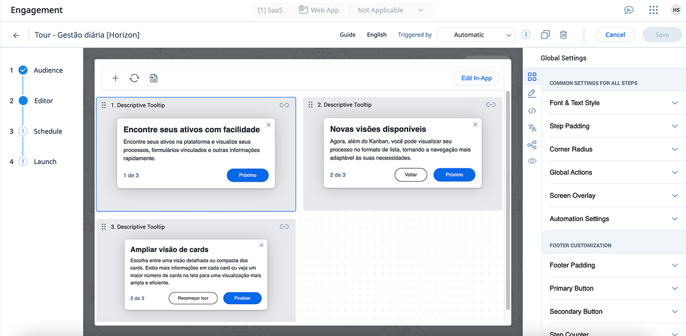
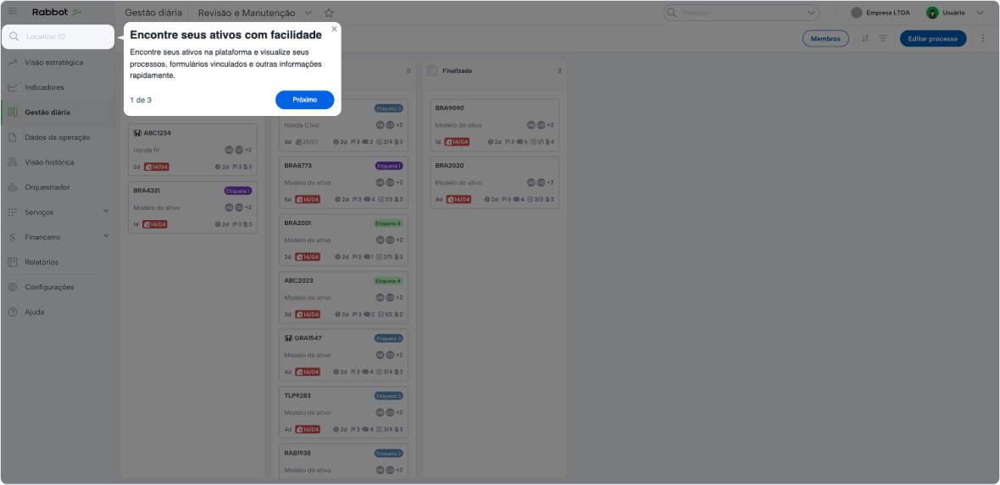
Tours interativos com Gainsight PX
Após o lançamento, acompanhamos métricas de uso: frequência de interação, tempo gasto nas jornadas, feedbacks via entrevistas e formulários. Esses dados foram fundamentais para validar hipóteses e priorizar os próximos ajustes.
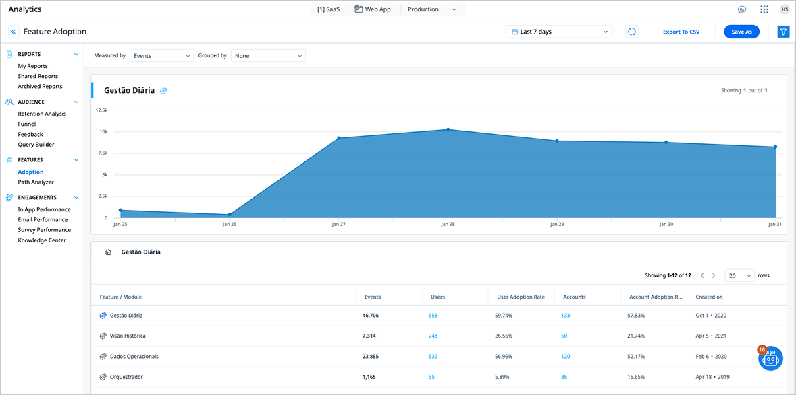
Métricas de uso pós-lançamento